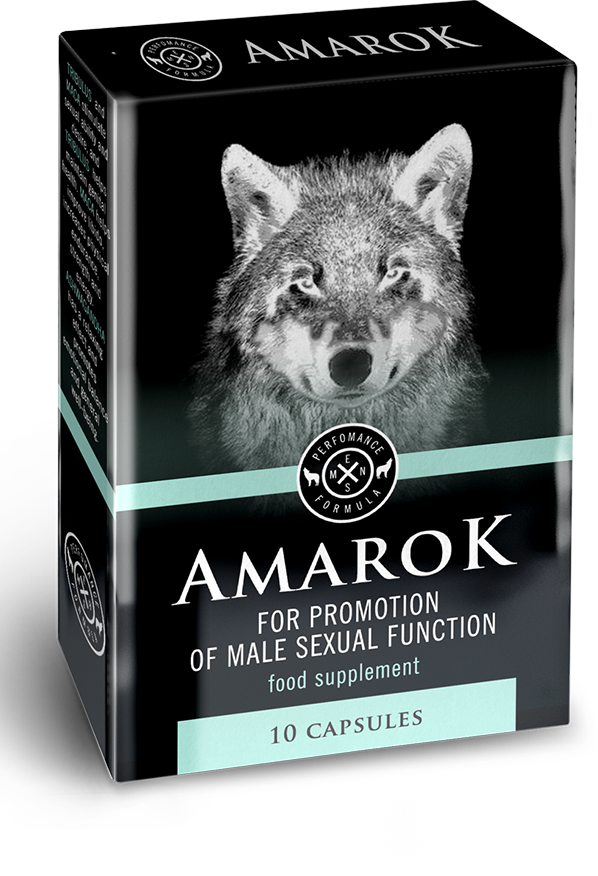

27.01.2020
Erőteljes potencia 2: a szexuális aktivitás visszanyerése
Pár szó magamról
Sziasztok! A nevem Márk, 43 éves vagyok és imádok szexelni. Olyannyira oda vagyok érte, hogy a feleségemmel már minden lehetséges helyen kipróbáltuk: liftben, öltözőben, strandon, repülőn, moziban, toronytetőn, hotelben és még sorolhatnám. Szerencsére az izgalmas helyek listája tovább bővül, bár fél éve majdnem impotens lettem.

Hogyan kezdődött
Egyszer eléggé bepiáltam, akkor hagyott először cserben a szerszámom. De akkor még nem foglalkoztunk vele, mint problémával, csak nevettünk egy jót és elmentünk aludni. Másnap ugyanez megismétlődött, bár akkorra már kijózanodtam. Mindenre gondoltam, csak impotenciára nem.
Pár nap önmegtartóztatás következett, gondoltuk, hogy az majd segít. Aztán végre ismét alkalom kínálkozott egy kiadós, szenvedélyes, vad szexre, de… a péniszem ezúttal sem akart engedelmeskedni.

Nem tudtam felfogni a történteket és kerestem az okát, ebben a korban biztosan nem én vagyok az egyetlen, aki ezzel a problémával szembesül. Végigkérdeztem az összes ismerősömet, mi náluk a helyzet intim téren. Gondoltam, senki nem beszél róla szívesen, hiszen ebben a korban ez már valahogy ciki… De nem, a francba is, eleget hallottam már erről. Szóval: az egyik szeretőket tart, a másik szombatonként orgiázik, a harmadik a pornóiparral próbálkozott, de a felesége lebeszélte, olyan is volt, aki az ötvenedig születésnapját hat prostival ünnepelte meg, de elmondása szerint tízzel is simán elbánt volna.
Na ennyi pont elég volt ahhoz, hogy azt gondoljam: ez csak átmeneti probléma, majd minden helyrejön. De minden egyes alkalom kudarccal végződött, sehogy se akart összejönni a szex.
A feleségem ki volt akadva, azt mondta, nem úszom meg ennyivel. Este aztán előhozakodott a Viagrával, mondván, hogy a nyugdíjasok is ezt tolják, nekem is ideje lenne már bevenni. Ekkor aztán elfogott az indulat és csak azért is bevettem egy tablettát.
Megtette a hatását. De csak félig állt fel. Valahogy betettem, mentünk egy menetet de nem tudtam elélvezni. Merthogy nagyon megfájdult a fejem, a látásom elhomályosult és hányingerem lett. Akkor elhatároztam, hogy többé nem mérgezem magam vegyszerrel.
Tanácsot kértem

Emlékeztek, beszéltem egy férfiról, aki hat prostival ünnepelt? Na, szóval gondoltam, megkérdezem tőle, honnan ez a hihetetlen erő. Elkezdett nevetni, és rákérdezett a fájó pontra, hogy vajon nekem is ilyen problémáim vannak. Mentegetőztem, hogy csak érdeklődöm. Erre ő: „Ugyan már, ne vedd a szívedre, én is átmentem ezen. Rohantam a gyógyszertárba, kutakodtam a fórumokon és megtaláltam azt a cuccot, ami nekem segített”.
Nem mertem egyből rákérdezni, mert majd mit gondol rólam, de ő csak mondta tovább:
”A neve , talán hallottál már róla. Ha gáz van, csak beveszel egy kapszulát reggel és este. Néhány nap múlva kőkeményen érzed majd a hatását. Csak szólok, ha majd megveszed, akkor az egész kúrát végig kell csinálni, hogy rögzüljön a hatás.
Ha végigszeded, azt se fogod tudni, mi az az impotencia. Régóta ismersz, ha nem használna, nem venném be. Úgyhogy fel a fejjel, cselekedj minél előbb”
Megadta a linket, ahol meg lehet venni azt a bizonyos -et, ha ott rendelek, biztos kihozzák a cuccot. Be is vásároltam belőle jó néhány csomaggal.
Elkezdtem szedni az -et, ahogy a haverom mondta: egy kapszula reggel és egy este, mert hát gáz az volt, nem is kicsi.
A feleségem csak élcelődött, mondván, ki fogja őt megdugni, már azt is felhozta, mit szólnék, ha szeretője lenne. Még nem tudta, mi vár rá.
Az első hatás
Néhány nappal később reggel egész jó erekcióra ébredtem. Gondoltam, majd adok én neked szeretőt. Azon az estén mindent úgy intéztem, mintha még egyszer meg szeretném próbálni, talán ezúttal fel fog állni.
Nem is kezdett el vetkőzni, mondván, minek, ha úgy sem lesz belőle semmi. Nem volt éppen humoros. Már az előjáték első másodperceiben úgy felállt, hogy nem csak ő, de én is le voltam döbbenve. Nem volt több kérdés, már tépte is le magáról a ruhát.
Úgy jó 5 órát szexeltünk. Olyan hangos volt, hogy csengett tőle a fülem. Szex után megkérdezte, mi történt. Elismerte, hogy bár korábban gyakran keféltünk, de a minőség hagyott kívánnivalót maga után. Ritkán ment el. De most egyetlen alkalom alatt hatszor élvezett.
Az az együttlét volt a fordulópont. Azóta minden nap gyűrjük a lepedőt, tökéletes lett a kapcsolatunk. Nincs több veszekedés, minden gondunkat az ágyban oldjuk meg.
Ezt a boldogságot csak is az -nek köszönhetem. Ha valakit érdekel, megadom a linket. Lepjetek meg feleséget, szeretőt.
Régóta köztudott, hogy ha probléma van az erekcióval, akkor semmi esetre sem szabad viagrát szedni. Lehet, hogy feláll, de nem fog sokáig tartani. Megvan a kockázata, hogy egész életedre impotens leszel, és akkor már egy orvos sem tud rajtad segíteni
Egyetértek, egyszer úgy alakult, hogy be kellett vennem egyet ebből a szarból, végül már nem is állt fel egyáltalán. Akárhány orvosnál voltam, csak az segített. Egy orvos ajánlotta, aki azt mondta, hogy ő maga is szedte, mert az használ
Ez a szer egyértelműen a legjobb, ami kapható. Nekem nem volt különösebb problémám az erekcióval, de egy este csak néhány alkalomra futotta. Miután végigszedtem, nincs ilyen gondom, akár 10-szer is simán elmegyek, csak kicsit kimerülök közben.
54 éves vagyok. Körülbelül egy éve volt először merevedési problémám. Majdnem két hónapig jártam urológushoz, utána andrológushoz. Aztán lett erekcióm, de elég gyenge. Csak úgy félig meddig állt fel. Mondjátok, az én esetemben is használ az ?
Kétségkívül mindenkinek használ. Az -ben csak természetes kivonatok vannak, ami nagyon jó hatással van a férfi szervezet egészére. Növeli például a libidót és a tesztoszteron termelését. Mindenkinek érdemes lenne megrendelni ezt a cuccot
Köszönöm, akkor én is megrendelem
Kb. két hete vettem a férjemnek ilyet, megmondtam neki, hogy igenis szedje. Rám mindig hallgat, be is vette, csak úgy működik nálunk. Nem is szerette annyira a szexet, amíg el nem kezdte szedni az -et:)
Nekem is volt olyanom, hogy nem akart felállni, nagyon aggódtam, hogy vége a szexuális életemnek. Amikor egy barátomnak elmeséltem, mellém állt és azt mondta, hogy a potencia probléma ma már nem nagy dolog. Szóval ő is az -et ajánlotta nekem.
51 vagyok, már vagy fél éve annak, hogy végigszedtem az -et. Az erekcióm normális. Mindenkinek ajánlom a készítményt
Szevasztok srácok. Három hónappal ezelőtt azt hittem, vége az intim együttléteknek, nálam is az impotencia jelei mutatkoztak. Az orvosok – már ha annak lehet őket nevezni – csak széttárták a karjukat, nem tudtak érdemben segíteni. Kipróbáltam egy csomó potencianövelő tablettát, de csak még rosszabb lett tőlük a helyzet. Mit gondoltok még nem késő ráállni az -re?
Soha nem késő. Lehetsz akár 60 éves, akkor is használ. Én 43 vagyok. Fél éven át kerestem azt a szert, valami olyasmit, mint amilyen az . Amikor végre ráleltem, gondolkodás nélkül meg is vettem. Végigszedtem a kúrát, minden intim jellegű problémám megoldódott
Üdv mindenkinek! Szeretném rávenni a férjemet, hogy szedje az -et, legalább egy hétig, meg is mondtam neki, hogy EGYÁLTALÁN nem vagyok elégedett a szexszel! Semennyire. Vagy keress másikat, vagy örülj annak, amid van. MIT TEGYEK??
Akkor állítsd választás elé. Ha máshogy nem megy. Keress szeretőt. Nem értem, miért nem él a lehetőséggel, ha egyszer nem árt, sőt, nagyon is használ.
Én sem értem. Vannak ismerőseim, akik az -et szedik, mindenki dicséri.
Egy ismerősöm hozott valahonnan -et, azt hittem, csak szórakozik velem, nem volt potenciaproblémám. Utána olvastam, kiderült, hogy teljes egészében természetes. Elkezdtem szedni és a hatás eget rengető volt. Néhány héttel később már olyan erekcióm volt, hogy szerintem még nőtt is pár centivel.